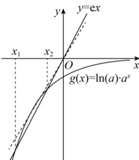

深圳中学 2024 级高二数学周测（8）参考答案
| 选择题 | 多选题 | |||||||||
| 1 | 2 | 3 | 4 | 5 | 6 | 7 | 8 | 9 | 10 | 11 |
| C | A | D | D | D | C | A | B | AB | ACD | BD |
12. 0.61 \(13.-\frac{3\sqrt{3}}{2}\) 14. \(\left[\frac{\sqrt{5}-1}{2},1\right)\)
6.
详解设事件 A 为“任意调查一名学生，每天玩手机超过 1h”，事件 B 为“任意调查一名学生，该学生近视”，
则 \(P(A) = \frac{1}{5}\) , \(P(B|A) = \frac{1}{2}\) , 所以 \(P(\overline{A}) = 1 - P(A) = \frac{4}{5}\) , \(P(B|\overline{A}) = \frac{3}{8}\)
则 \(P(B) = P(A)P(B|A) + P(B|\overline{A})P(\overline{A}) = \frac{1}{5}\times \frac{1}{2} +\frac{4}{5}\times \frac{3}{8} = \frac{2}{5}\) 故选：C
7.
详解由图象可知 \(f(0)=d>0\) ， \(f'(x)=3ax^{2}+2bx+c\) 有两个不相等的正实数根 \(x_{1}, x_{2}\) ，
且 \(f(x)\) 在 \((-\infty, x_1), (x_2, +\infty)\) 上单调递增，在 \((x_1, x_2)\) 上单调递减，
所以 \(a > 0, x_{1} + x_{2} = -\frac{2b}{3a} > 0, x_{1}x_{2} = \frac{c}{3a} > 0\) ，所以 \(b < 0, c > 0\)
综上： \(a > 0\) ， \(b < 0\) ， \(c > 0\) ， \(d > 0\) .故选：A
8.详解转化法，零点的问题转为函数图象的交点
因为 \(f'(x)=2\ln a\cdot a^{x}-2\mathrm{e}x\) ，所以方程 \(2\ln a\cdot a^{x}-2\mathrm{e}x=0\) 的两个根为 \(x_{1},x_{2}\) ，
即方程 \(\ln a \cdot a^{x} = e x\) 的两个根为 \(x_{1}, x_{2}\) ,
即函数 \(y = \ln a \cdot a^{x}\) 与函数 \(y = e x\) 的图象有两个不同的交点，
因为 \(x_{1}, x_{2}\) 分别是函数 \(f(x) = 2a^{x} - \mathrm{e}x^{2}\) 的极小值点和极大值点，
所以函数 \(f(x)\) 在 \((-∞, x_1)\) 和 \((x_2, +∞)\) 上递减，在 \((x_1, x_2)\) 上递增，

所以当时 \((-∞,x_{1})(x_{2},+∞)\) ， \(f'(x)<0\) ，即 \(y=e x\) 图象在 \(y=\ln a\cdot a^{x}\) 上方
当 \(x \in (x_1, x_2)\) 时， \(f'(x) > 0\) ，即 \(y = \mathbf{e}x\) 图象在 \(y = \ln a \cdot a^x\) 下方
a>1，图象显然不符合题意，所以0<a<1。
令 \(g(x) = \ln a\cdot a^x\) ，则 \(g^{\prime}(x) = \ln^{2}a\cdot a^{x},0 < a < 1\)
设过原点且与函数 \(y = g(x)\) 的图象相切的直线的切点为 \(\left(x_{0}, \ln a \cdot a^{x_{0}}\right)\) ,
则切线的斜率为 \(g^{\prime}(x_0) = \ln^2 a\cdot a^{x_0}\) ，故切线方程为 \(y - \ln a\cdot a^{x_0} = \ln^2 a\cdot a^{x_0}(x - x_0)\)
则有 \(-\ln a \cdot a^{x_0} = -x_0 \ln^2 a \cdot a^{x_0}\) ，解得 \(x_0 = \frac{1}{\ln a}\) ，则切线的斜率为 \(\ln^2 a \cdot a^{\frac{1}{\ln a}} = e \ln^2 a\)
因为函数 \(y = \ln a \cdot a^x\) 与函数 \(y = \mathrm{e}x\) 的图象有两个不同的交点，
所以 \(\mathrm{e}\ln^2 a < \mathrm{e}\) ，解得 \(\frac{1}{\mathrm{e}} < a < \mathrm{e}\) ，又 \(0 < a < 1\) ，所以 \(\frac{1}{\mathrm{e}} < a < 1\) ，
综上所述，a 的取值范围为 \(\left(\frac{1}{\mathrm{e}},1\right)\) .
9.
详解对于A，因为 \(P(A) = \frac{1}{2}\) ， \(P(B) = \frac{1}{3}\) ， \(P(\overline{A} | B) = P(\overline{A} | \overline{B})\)
所以 \(\frac{P(\overline{A}B)}{P(B)}=\frac{P(\overline{A}B)}{\frac{1}{3}}=3P(\overline{A}B),\frac{P(\overline{A}\overline{B})}{P(\overline{B})}=\frac{P(\overline{A}\overline{B})}{1-\frac{1}{3}}=\frac{3}{2}P(\overline{A}\overline{B}),\)
所以 \(3P(\overline{A} B) = \frac{3}{2} P(\overline{A}\overline{B})\) ，即 \(2P(\overline{A} B) = P(\overline{A}\overline{B})\) ，故A正确；
对于 B，因为 \(P(\overline{A}B)+P(AB)=P(B)=\frac{1}{3}\) ①， \(P(\overline{A}\overline{B})+P(\overline{A}B)=P(\overline{A})=1-\frac{1}{2}=\frac{1}{2}\)
又因为 \(P\left(\overline{A}\overline{B}\right) = 2P\left(\overline{A} B\right)\) ，所以 \(2P\left(\overline{A} B\right) + P\left(\overline{A} B\right) = \frac{1}{2}\) ，所以 \(P\left(\overline{A} B\right) = \frac{1}{6}\)
代入①可得： \(\frac{1}{6}+P(AB)=\frac{1}{3}\) ，所以 \(P(AB)=\frac{1}{6}\) ，
\(P(A)P(B)=\frac{1}{2}\times\frac{1}{3}=\frac{1}{6}\) ，所以 \(P(AB)=P(A)P(B)\) ，故B正确；
对于 C， \(P(\overline{A} \mid B) = \frac{P(\overline{A}B)}{P(B)} = \frac{P(B) - P(AB)}{P(B)} = \frac{\frac{1}{3} - \frac{1}{2} \times \frac{1}{3}}{\frac{1}{3}} = \frac{1}{2}\) ，故 C 不正确；
对于 D， \(P(A \mid B) = \frac{P(AB)}{P(B)} = \frac{P(A)P(B)}{P(B)} = P(A) = \frac{1}{2}\) ，故 D 不正确；
故选：AB.
10.
详解对 A，因为函数 \(f(x)\) 的定义域为 R，而 \(f'(x)=2(x-1)(x-4)+(x-1)^{2}=3(x-1)(x-3)\) ,
易知当 \(x \in (1,3)\) 时， \(f'(x) < 0\) ，当 \(x \in (-\infty, 1)\) 或 \(x \in (3, +\infty)\) 时， \(f'(x) > 0\)
函数 \(f(x)\) 在 \((-\infty,1)\) 上单调递增，在 \((1,3)\) 上单调递减，在 \((3,+\infty)\) 上单调递增，故x=3是函数 \(f(x)\) 的极小值点，正确；
对 B，当 0 < x < 1 时， \(x - x^{2} = x(1 - x) > 0\) ，所以 \(1 > x > x^{2} > 0\) ，
而由上可知，函数 \(f(x)\) 在 \((0,1)\) 上单调递增，所以 \(f(x) > f(x^{2})\) ，错误；
对 C，当 1 < x < 2 时，1 < 2x - 1 < 3，而由上可知，函数 \(f(x)\) 在 \((1,3)\) 上单调递减，
所以 \(f(1) > f(2x - 1) > f(3)\) ，即 \(-4 < f(2x - 1) < 0\) ，正确；
对D，当 \(-1 < x < 0\) 时， \(f(2 - x) - f(x) = (1 - x)^2 (-2 - x) - (x - 1)^2 (x - 4) = (x - 1)^2 (2 - 2x) > 0\)
所以 \(f(2-x)>f(x)\) ，正确；故选：ACD.
13.
详解 \(f'(x)=2\cos x+2\cos 2x=2\cos x+2(2\cos^{2}x-1)=4\cos^{2}x+2\cos x-2=2(\cos x+1)\cdot(2\cos x-1)\)
令 \(f'(x) > 0\) ，得 \(\cos x > \frac{1}{2}\) ，即 \(f(x)\) 在区间 \(\left(2k\pi - \frac{\pi}{3}, 2k\pi + \frac{\pi}{3}\right) (k \in \mathbf{Z})\) 内单调递增；
令 \(f'(x) < 0\) ，得 \(\cos x < \frac{1}{2}\) ，即 \(f(x)\) 在区间 \(\left(2k\pi + \frac{\pi}{3}, 2k\pi + \frac{5\pi}{3}\right) (k \in \mathbf{Z})\) 内单调递减.
则 \([f(x)]_{\min} = f\left(2k\pi -\frac{\pi}{3}\right) = -\frac{3\sqrt{3}}{2}\) 故答案为： \(-\frac{3\sqrt{3}}{2}\)
14.
详解由函数的解析式可得 \(f'(x) = a^x \ln a + (1 + a)^x \ln (1 + a) \geq 0\) 在区间 \((0, +\infty)\) 上恒成立，
则 \(\left(1 + a\right)^x\ln (1 + a)\geq -a^x\ln a\) ，即 \(\left(\frac{1 + a}{a}\right)^x\geq -\frac{\ln a}{\ln(1 + a)}\) 在区间 \((0, + \infty)\) 上恒成立，
故 \(\left(\frac{1+a}{a}\right)^{0}=1\geq-\frac{\ln a}{\ln(1+a)}\) ，而 \(a+1\in(1,2)\) ，故 \(\ln(1+a)>0\) ，
故 \(\left\{\begin{aligned}\ln(a+1)\geq-\ln a\\ 0<a<1\end{aligned}\right.\) 即 \(\left\{\begin{aligned}a(a+1)\geq1\\ 0<a<1\end{aligned}\right.\) ，故 \(\frac{\sqrt{5}-1}{2}\leq a<1\)
结合题意可得实数 \(a\) 的取值范围是 \(\left[\frac{\sqrt{5} - 1}{2}, 1\right)\) . 故答案为: \(\left[\frac{\sqrt{5} - 1}{2}, 1\right)\) .
15. 解(1)设甲学校在三个项目中获胜的事件依次记为 A, B, C, 甲学校获得冠军的事件记为 D, 则
\[P (D) = P (A B C) + P (\overline {{{A}}} B C) + P (A \overline {{{B}}} C) + P (A B \overline {{{C}}}) = P (A) P (B) P (C) + P (\overline {{{A}}}) P (B) P (C) + P (A) P (\overline {{{B}}}) P (C) + P (A) P\]
\[(B) P (\overline {{{C}}}) = 0. 5 \times 0. 4 \times 0. 8 + 0. 5 \times 0. 4 \times 0. 8 + 0. 5 \times 0. 6 \times 0. 8 + 0. 5 \times 0. 4 \times 0. 2 = 0. 1 6 + 0. 1 6 + 0. 2 4 + 0. 0 4 = 0. 6.\]
(2)依题可知,X的可能取值为0,10,20,30,所以,
\[P (X = 0) = 0. 5 \times 0. 4 \times 0. 8 = 0. 1 6,\]
\[P (X = 1 0) = 0. 5 \times 0. 4 \times 0. 8 + 0. 5 \times 0. 6 \times 0. 8 + 0. 5 \times 0. 4 \times 0. 2 = 0. 4 4,\]
\[P (X = 2 0) = 0. 5 \times 0. 6 \times 0. 8 + 0. 5 \times 0. 6 \times 0. 2 + 0. 5 \times 0. 4 \times 0. 2 = 0. 3 4,\]
\[P (X = 3 0) = 0. 5 \times 0. 6 \times 0. 2 = 0. 0 6.\]
即 \(X\) 的分布列为
| X | 0 | 10 | 20 | 30 |
| P | 0.16 | 0.44 | 0.34 | 0.06 |
期望 \(E(X)=0\times0.16+10\times0.44+20\times0.34+30\times0.06=13\) .
16.
详解（1）由 \(f(x) = \ln (a - x) \Rightarrow f'(x) = \frac{1}{x - a}\) ， \(y = xf(x) \Rightarrow y' = \ln (a - x) + \frac{x}{x - a}\) ，
又 x=0 是函数 \(y=xf(x)\) 的极值点，所以 \(y'(0)=\ln a=0\) ，解得 a=1。
经检验，a=1时满足题意.
（2）由（I）知， \(g(x)=\frac{x+\ln(1-x)}{x\ln(1-x)}=\frac{1}{\ln(1-x)}+\frac{1}{x}\) ，其定义域为 \((-∞,0)U(0,1)\) .
要证 \(g(x) < 1\) ，即证 \(\frac{1}{\ln(1 - x)} + \frac{1}{x} < 1\) ，即证 \(\frac{1}{\ln(1 - x)} < 1 - \frac{1}{x} = \frac{x - 1}{x}\) .
(i) 当 \(x \in (0,1)\) 时， \(\frac{1}{\ln(1-x)} < 0\) ， \(\frac{x-1}{x} < 0\) ，即证 \(\ln(1-x) > \frac{x}{x-1}\) 。令 \(F(x) = \ln(1-x) - \frac{x}{x-1}\) ，因为
\(F^{\prime}(x) = \frac{-1}{1 - x} -\frac{-1}{(x - 1)^{2}} = \frac{x}{(x - 1)^{2}} >0\) ，所以 \(F(x)\) 在区间(0,1)内为增函数，所以 \(F(x) > F(0) = 0\)
（ii）当 \(x \in (-\infty, 0)\) 时， \(\frac{1}{\ln(1 - x)} > 0\) ， \(\frac{x - 1}{x} > 0\) ，即证 \(\ln(1 - x) > \frac{x}{x - 1}\) ，由（i）分析知 \(F(x)\) 在区间 \((- \infty, 0)\) 内为减函数，所以 \(F(x) > F(0) = 0\) 。
综合（i）（ii）有 \(g(x) < 1\)
补充题答案: 解(1)记“第 \(i\) 次投篮的人是甲”为事件 \(A_{i}\) , “第 \(i\) 次投篮的人是乙”为事件 \(B_{i}\) , 则
\[P (B _ {2}) = P \left(A _ {1} B _ {2}\right) + P \left(B _ {1} B _ {2}\right) = P \left(A _ {1}\right) \cdot P \left(B _ {2} \mid A _ {1}\right) + P \left(B _ {1}\right) P \left(B _ {2} \mid B _ {1}\right) = 0. 5 \times (1 - 0. 6) + 0. 5 \times 0. 8 = 0. 6.\]
(2) 设 \(P(A_{i})=p_{i}\) ，依题可知， \(P(B_{i})=1-p_{i}\)
则当 \(i \geqslant 2\) 时, \(P(A_{i}) = P(A_{i-1}A_{i}) + P(B_{i-1}A_{i}) = P(A_{i-1}) \cdot P(A_{i}|A_{i-1}) + P(B_{i-1})P(A_{i}|B_{i-1})\) ,
\[p _ {i} = 0. 6 p _ {i - 1} + (1 - 0. 8) \times (1 - p _ {i - 1}) = 0. 4 p _ {i - 1} + 0. 2 = \frac {2}{5} p _ {i - 1} + \frac {1}{5}.\]
构造等比数列 \(\{p_{i}+\lambda\}\) ,
设 \(p_i + \lambda = \frac{2}{5} (p_{i - 1} + \lambda)\) ，解得 \(\lambda = -\frac{1}{3}\) 则 \(p_i - \frac{1}{3} = \frac{2}{5}\left(p_{i - 1} - \frac{1}{3}\right).\)
又 \(p_1 = \frac{1}{2}, p_1 - \frac{1}{3} = \frac{1}{6}\) ,
所以 \(\left\{p_{i} - \frac{1}{3}\right\}\) 是首项为 \(\frac{1}{6}\) , 公比为 \(\frac{2}{5}\) 的等比数列,
\[p _ {i - \frac {1}{3}} = \frac {1}{6} \times \left(\frac {2}{5}\right) ^ {i - 1}, p _ {i} = \frac {1}{6} \times \left(\frac {2}{5}\right) ^ {i - 1} + \frac {1}{3}, i \in \mathbf {N} _ {+}.\]
(3)因为 \(p_{i}=\frac{1}{6}\times\left(\frac{2}{5}\right)^{i-1}+\frac{1}{3},i=1,2,\cdots,n,\)
所以当 \(n \in N_{+}\) 时, \(E(Y) = p_{1} + p_{2} + \cdots + p_{n} = \frac{1}{6} \times \frac{1 - \left(\frac{2}{5}\right)^{n}}{1 - \frac{2}{5}} + \frac{n}{3} = \frac{5}{18} \left[ 1 - \left(\frac{2}{5}\right)^{n} \right] + \frac{n}{3}\) ,
故 \(E(Y) = \frac{5}{18}\left[1 - \left(\frac{2}{5}\right)^n\right] + \frac{n}{3}.\)